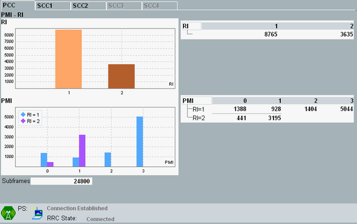
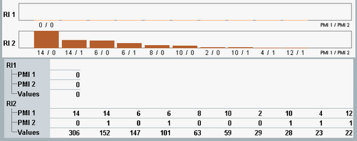
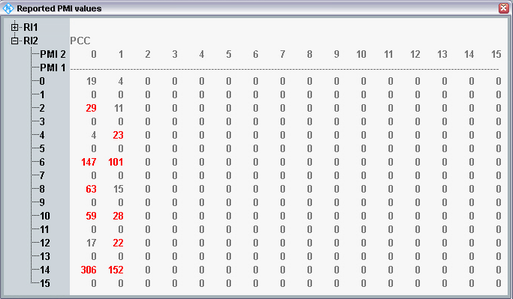

The "PMI - RI" view provides a statistical evaluation of the precoding matrix indicator (PMI) values and rank indicator (RI) values reported by the UE.
This view is only available if CQI reporting is enabled in the signaling application, see "Enable CQI Reporting".
Whether PMI and/or RI reports are sent by the UE depends on the transmission mode. For TM 8 and 9, you must explicitly request reports from the UE, see "Enable PMI/RI Reporting (TM 8, 9)".
For carrier aggregation scenarios, the results for the individual component carriers are presented on different tabs. If you want to evaluate PMI reports for several carriers, ensure that the configured "CQI/PMI Config Index" of the carriers is compatible, see "CQI/PMI Config Index".

The bar graphs show how often specific values have been reported by the UE since the measurement has been started. The tables provide the same information as the bar graphs.
The upper bar graph shows how often the individual RI values have been reported. There is one bar per RI value.
- Two antennas / two CSI-RS ports: PMI = 0 to 3 for RI = 1, PMI = 0 to 1 for RI = 2
- Four antennas / four CSI-RS ports: PMI = 0 to 15
- Eight CSI-RS ports: two PMI values are reported, PMI = 0 to 15
The view shows results for the most frequently reported PMI value combinations (up to 10 combinations).
Lower part for eight CSI-RS ports
To display result tables for all possible RI - PMI 1 - PMI 2 combinations, press the softkey - hotkey combination "Display > PMI 1 x PMI 2 Results".
Complete tables, RI - PMI 1 - PMI 2 combinations
The highlighted values in the complete tables are also displayed in the bar graphs.
For "Subframes", see "Common View Elements".